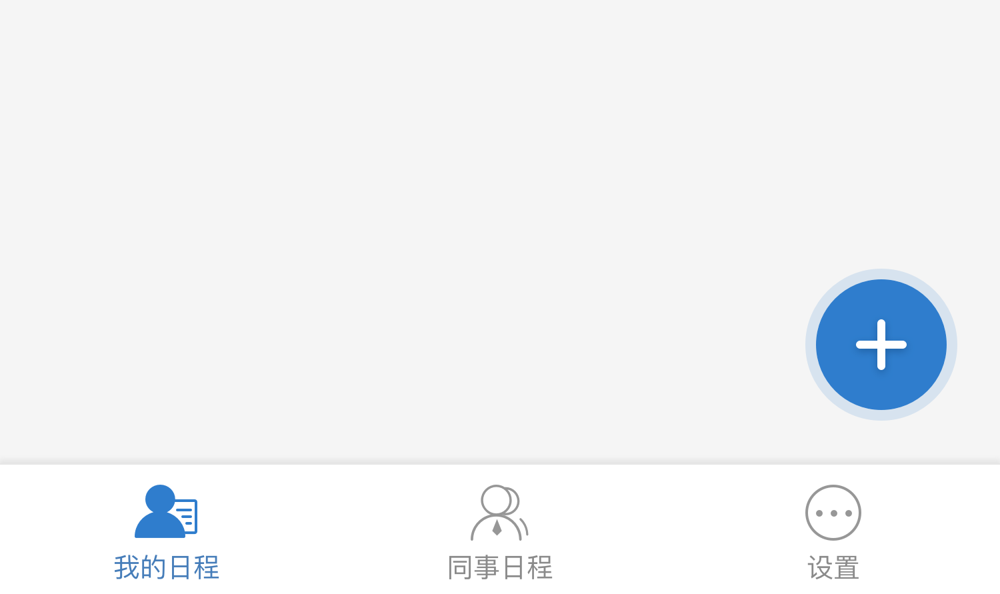
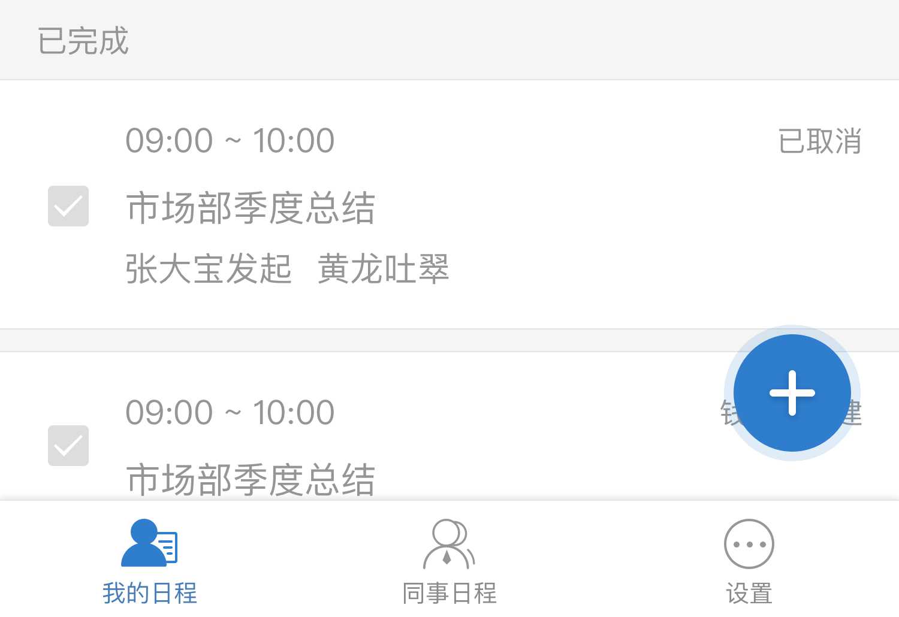
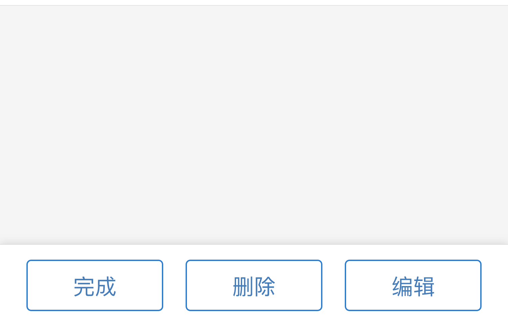
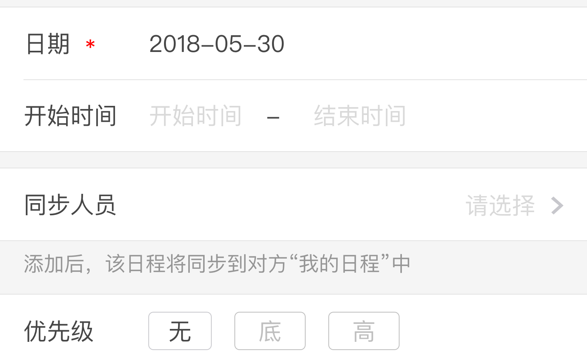
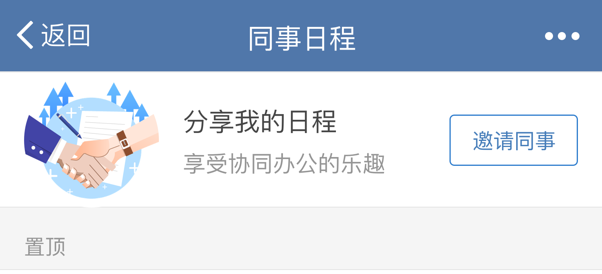
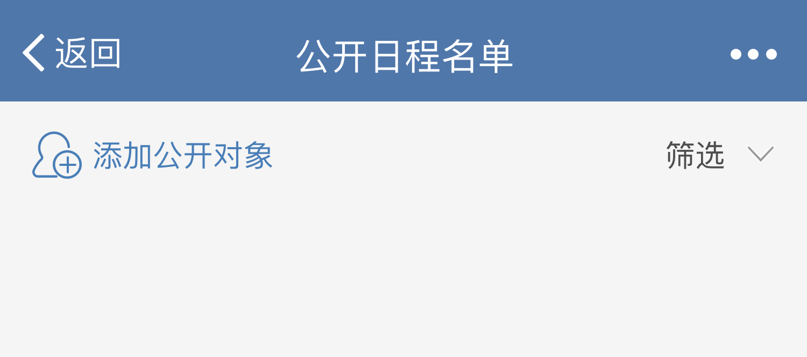
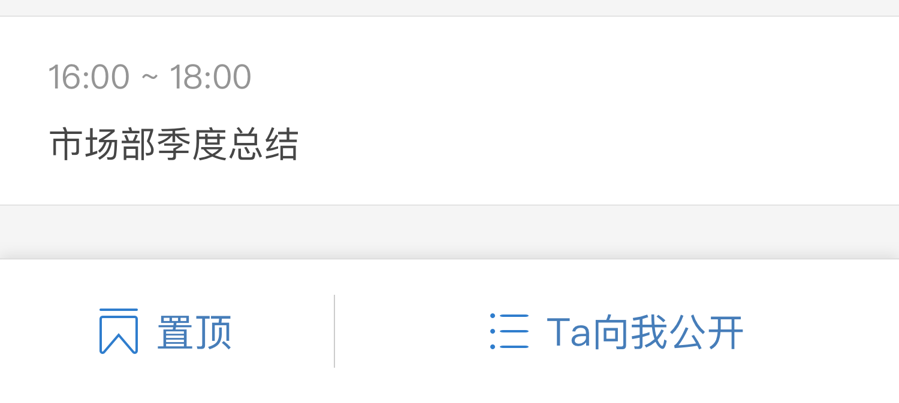
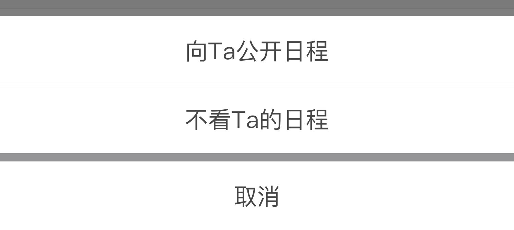
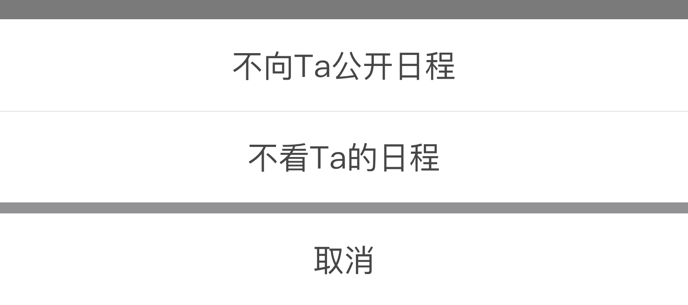
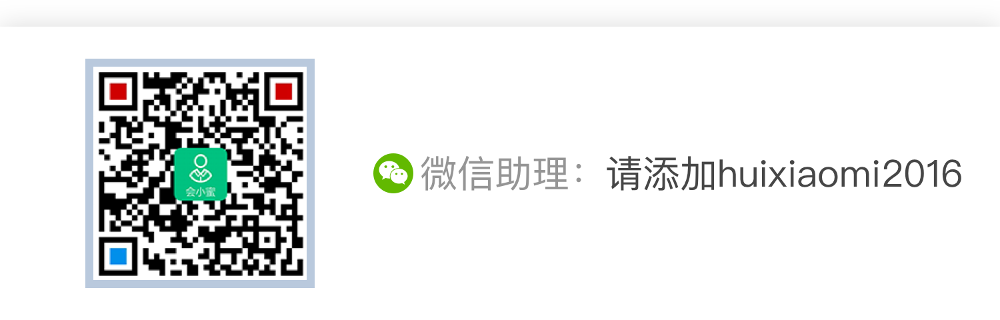

在工作和生活中，你是否遇到过以下烦恼？
工作和生活信息碎片化，重要的事情容易忽略
答应别人的事情，给忘了
不知道明天应该做什么
别担心，日程管理能够帮你高效完成任务、规划时间、团队协作。帮你随时随地记录并同步工作、生活中的所有任务，让你在管理和规划未来的时间中事半功倍。
规划好所有任务
你可用日程管理制定工作计划、生活计划，记录购物清单，设置生日提醒或者安排日程。便捷的设计，让你的日程待办一目了然。
强大的提醒功能
你可以按周\月维度切换日历视图，查看日程安排，支持公历和节假日显示。任务可修改日期，制定合理的工作计划。
直观的日历视图
你可以在按周\月维度切换日历视图，查看日程安排，支持公历和节假日显示。你也可以进行任务修改日期，制定合理的工作计划。
与同事分享日程
同事之间的任务协作还是团队、合作方之间的日程计划公开，都可以在日程管理中同步。
开始使用日程管理
1.如何创建我的日程?
在我的日程右侧点击“+”键，快速添加我的日程，比如工作计划、生日提醒、旅行安排、会议准备等，以便更好的规划时间和安排生活。可以对日程进行优先级排序，添加同步人员，选择是否公开；

2.我的日程list如何操作？
我的日程list可以直接“打勾”标注已完成，或点击详情页进行编辑、删除、切换日期；


3.协同的任务如何分享？
创建个人日程中添加同步人员，该日程会分享自对方“我的日程”中；

4.同事日程如何使用？
如果你的日程需要向同事公开，在“同事日程”页点击上方“向Ta公开”按钮选择指定同事；创建日程时开启“公开日程”按钮，开启后，你创建的公开日程，指定同事在“同事日程”中可见；


5.如何操作“不看Ta的日程”？
如果对向你公开日程的同事不感兴趣，可点击该同事个人主页，点击右下角“Ta向我公开”状态菜单选择“不看Ta的日程”；


6.“向Ta公开日程”和“不向Ta公开日程”
同事向你公开日程你可以操作“向Ta公开日程”和“不看Ta的日程”； 如你需向同事公开日程，在“同事日程”页或在“设置”页“公开日程名单”中操作“向Ta公开日程”；向Ta公开之后若点击“不向Ta公开日程”对方看不到你的公开日程；

